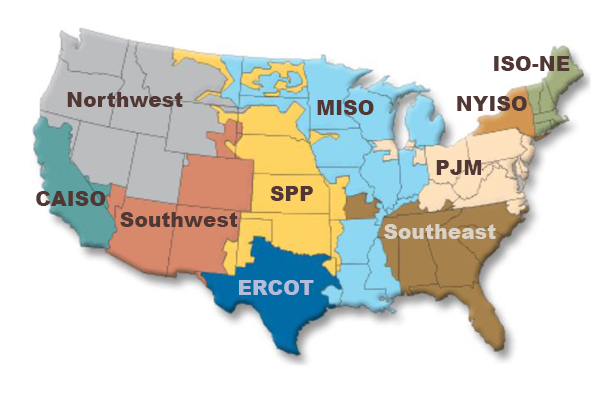

Here's a map of various balancing authorities/regions throughout the US. 
We chose MISO because we are a Detroit-based team and CISO/CAISO because solar power is more fruitful there than in
"sunny" Detroit. We have plans to extend capabilities to model different regions, but the EIA's API doesn't always
use the same nomenclature between different calls.
We used API calls to get historical data from 2021 in the US from the Energy Information Agency (EIA) API. We then chose arbitrary dates and times to represent the four seasons and four distinct times of day. The steps for processing this data are shown in the flowchart below (reads right to left).
Future work could include avereaging our calulated capacities over a few hours in a day or a few days in a month so that the spikes in energy due to weather are less pronounced.
Some plants are run as peaking plants (aren't on all the time), others have planned outages (i.e. nuclear in the spring and fall), and yet others are dependent on weather and sunlight.
We multiplied the balancing authority's actual hourly demand by different multipliers depending on the difficulty (0.01 for easy, 0.1 for medium and 1 for hard). We picked times in the day that were representative of night, morning, midday, and evening. This means the power is a snapshot in time, not live or averged in any way. Future work could include avereaging demand over a few hours in a day or a few days in a month.
We based the minimum and maximum plant sizes based on what plants were operational in the US in 2021. According to table ES-1 of this report, the approximate acre/MW for large photovoltaic power plants is about 8. Using that figure, dimensional analysis gives us a 18.75 square mile area for a 1500 MW solar plant.